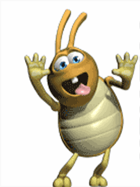
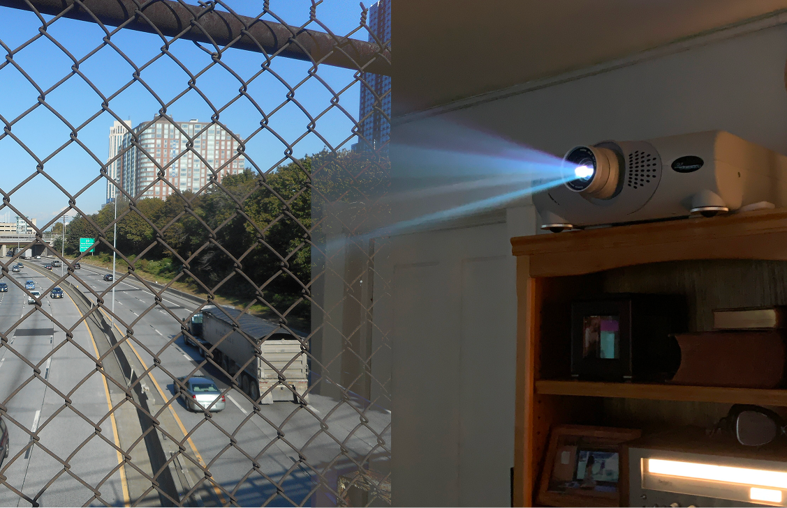

| МАТЕРИАЛ | ЗАЧЕМ | СТОИМОСТЬ |
| Проектор | Для проекции цифровой линейной сетки на сетку физическую | 0$ |
| Ткань / Пластик | Для отлавливания лучей проектора | 5$ |
| Сетка | Для отлавливания лучей проектора и создания объекта | 10$ |
| Аудиосистема | Для улучшения защитного механизма объекта | 0$ |
| Вебкамера | Для Отслеживания местоположения человека | 0$ |
| Провода и Удлинители | Для обеспечения работы выставки | ?$ |
| Компьютер | Для обеспечения работы выставки | 0$ |